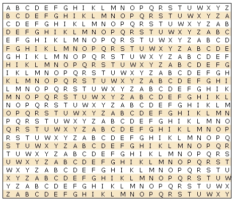

| Развитие шифров | Изобретения | Немного о... | На главную..>>|

Таблица Тритемия
Богатым на новые идеи в криптографии оказался XVI век. Многоалфавитные шифры получили развитие в вышедшей в 1518 г.
первой печатной книге по криптографии под названием «Полиграфия».
Автором книги был один из самых знаменитых ученых того времени аббат Иоганнес Тритемий.
В этой книге впервые в криптографии появляется квадратная таблица. Шифралфавиты записаны
в строки таблицы один под другим, причем каждый из них сдвинут на одну позицию влево по сравнению с предыдущим.
Тритемий предлагал использовать эту таблицу для многоалфавитного зашифрования самым простым из возможных способов:
первая буква текста шифруется первым алфавитом, вторая буква — вторым и т. д. В этой таблице не было отдельного
алфавита открытого текста, для этой цели служил алфавит первой строки. Таким образом, открытый текст, начинающийся со слов
HUNC CAVETO VIRUM …,
приобретал вид
HWPF GFBMCZ FUEIB …
Преимущество этого метода шифрования по сравнению с методом Альберти состоит в том,
что с каждой буквой задействуется новый алфавит. Альберти менял алфавиты лишь после
трех или четырех слов. Поэтому его шифртекст состоял из отрезков, каждый из которых
обладал закономерностями открытого текста, которые помогали вскрыть криптограмму.
Побуквенное зашифрование не дает такого преимущества. Шифр Тритемия является также первым
нетривиальным примером периодического шифра. Так называется многоалфавитный шифр, правило
зашифрования которого состоит в использовании периодически повторяющейся последовательности простых замен.